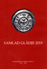
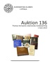
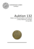
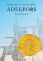
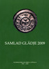

Program
Mötesreferat
Bli medlem
Historik
Stadgar
Samla mynt
Jubileumsbok
Jubileumsbok 2009
Jubileumsbok 2019
Småskrifter
Auktionskatalog
Länkar
Kontakt
Klubben grundades 1969 och är ansluten till Svenska Numismatiska Föreningen.
Numismatiska klubben i Uppsala är en sammanslutning av numismatiskt intresserade personer i Uppsala med omnejd. Klubbens syfte är att genom anordnande av samkväm, föredrag, studiebesök, auktioner, bytesaftnar, utställningar m.m. öka det numismatiska kunnandet bland dess medlemmar, och även verka för ökad förståelse och vidgat intresse för numismatiken bland allmänheten.
Klubben har normalt åtta möten per år, fyra under våren och fyra under hösten. Genom ett nära samarbete med Uppsala universitets myntkabinett, Svenska numismatiska föreningen och Kungliga myntkabinettet i Stockholm har klubben tillgång till kvalificerade och inspirerande föredragshållare, som brukar tala om olika ämnen med numismatisk anknytning. Förutom möten med föredrag har vi även myntauktioner och allmänna bytes- och diskussionsaftnar. Utflykter och museibesök förekommer också. Vid decembermötena har vi under många år haft förmånen att ha Lars O. Lagerqvist, tidigare chef på Myntkabinettet i Stockholm, som föredragshållare eller kåsör över något numismatiskt ämne. Dessa möten brukar avslutas med en gemensam middag. Årsavgiften för medlemskap i Numismatiska klubben i Uppsala är för närvarande 100 kr. Mer information hur du blir medlem hittar du här.
Jubileum 1969-2019
För att fira klubbens 50-åriga existens har vi utgivit en jubileumsbok. Läs mer om boken: Samlad Glädje 2019

Auktionskatalog "Auktion 136 - Thomas Hernqvists oskarianska medaljsamling" under redaktion av Magnus Wijk. Katalogen kan köpas på Numismatiska klubbens i Uppsala sammankomster för 100 kr. Den kan också beställas genom info@nku.nu till ett pris av 125 kr (inklusive inrikes porto). Insättes på klubbens bankgiro 871-4578. Märk inbetalningen "Auktion 136". För beställningar från utlandet - kontakta klubben via info@nku.nu.

Auktionskatalog "Auktion 132 - Pollett- och litteraturauktion med material ur Börje Rådströms samlingar" under redaktion av Magnus Wijk (errata). Katalogen kan köpas på Numismatiska klubbens i Uppsala sammankomster för 100 kr. Den kan också beställas genom info@nku.nu till ett pris av 125 kr (inklusive inrikes porto). Insättes på klubbens bankgiro 871-4578. Märk inbetalningen "Auktion 132". För beställningar från utlandet - kontakta klubben via info@nku.nu.

Småskrift nr 3 "Dukater av guld från Ädelfors", författad av Bengt Hemmingsson med layout av Magnus Wijk. (Slutsåld)

Auktionskatalog "Auktion 128 - Bibliotek Jan Andersson" under redaktion av Magnus Wijk Katalogen kan köpas på Numismatiska klubbens i Uppsala sammankomster för 75 kr. Den kan också beställas genom info@nku.nu till ett pris av 100 kr (inklusive inrikes porto). Insättes på klubbens bankgiro 871-4578. Märk inbetalningen "Auktion 128". För beställningar från utlandet - kontakta klubben via info@nku.nu.
Jubileum 1969-2009
För att fira klubbens 40-åriga existens har vi utgivit en jubileumsbok.
Läs mer om boken: Samlad Glädje 2009.

Auktionskatalog "Auktion 117 - Anders Frösells pollettsamling" under redaktion av Magnus Wijk
Småskrift nr 2 "Index över Gunnar Ekströms myntsamling såld genom B. Ahlström mynthandels auktioner 1975-1987"
av Magnus Wijk.
Småskrift nr 1 "Svenska Numismatiska Tidskrifter"
av Magnus Wijk och Kjell Holmberg.
Jubileum 1969-1999
För att fira klubbens 30-åriga existens har vi utgivit en jubileumsbok.
Läs mer om boken: Samlad Glädje.